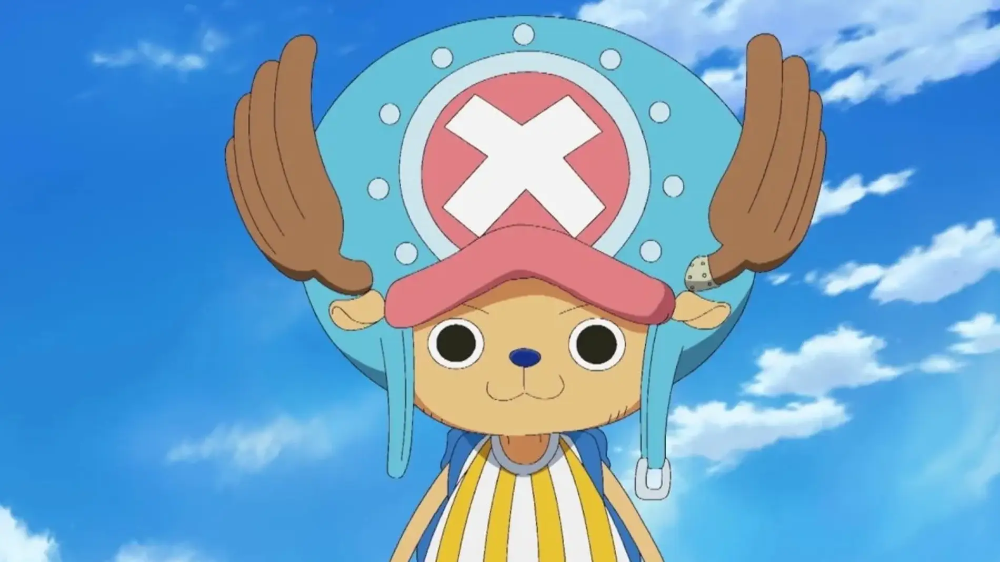

Water Seven

Isla de Drum
País de Wano

Grand Line es la corriente oceánica que se encuentra rodeada por los Calm Belt y sigue una línea imaginaria que va desde el noroeste hacia el sudeste a través del centro del mundo. También es el lugar en el que gira en torno a la trama, donde nuestros protagonistas lo atraviesan, encontrando enemigos, los piratas más fuertes, islas e infinidad de cosas; en busca del One Piece.